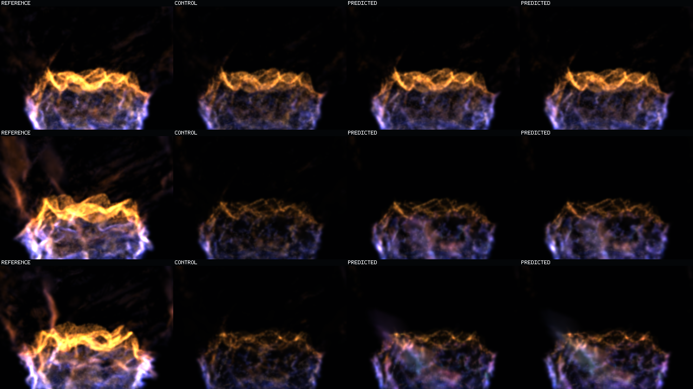
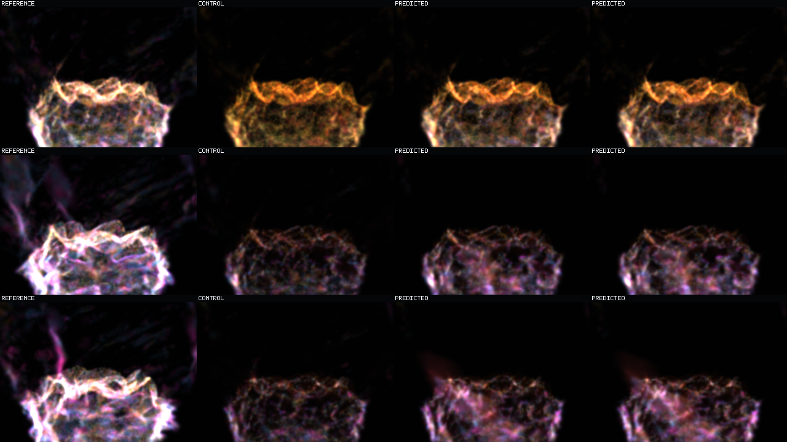

Question: Does a second frozen-seed H12 generation extend recurrent fire, or has first-generation H12 reached its fixed point?
Answer: a small, consistent extension. Every state and energy cohort improves under identical support, birth's persistent identity-loss boundary moves `2.08 s`, and late beauty gains `+0.0963 dB`.
Visual boundary: generation two retains modestly more violet interior and orange-rim energy. It does not restore the exact tall flame sheet.
Rows are chronological: 0.16 s, 5.12 s, 10.08 s. The labels immediately below are the four columns. Both source prediction tiles say `PREDICTED`; column position distinguishes the generations.

Same row and column order with the additive display-only cohort mix at requested/effective gain 0.625. Green marks Q1/Q2, yellow Q3, red Q4/death, blue transport, magenta birth. The mix does not mutate state.

Finite `63`-frame sequences at `160 ms` cadence and `10.08 s` duration. Inside each video: left exact reference, middle copied control, right prediction.
Same role states and cadence with display-only gain `0.625`.
| Cohort | Gen1 steps 49-63 | Gen2 steps 49-63 |
|---|---|---|
| Q1 | 0.9438 | 0.8866 |
| Q2 | 0.9316 | 0.9074 |
| Q3 | 0.9362 | 0.9203 |
| Q4 | 0.9948 | 0.9872 |
| Transport | 1.0275 | 1.0143 |
| Birth | 1.0542 | 1.0415 |
Birth's persistent loss to identity moves from step 45 to step 58: +13 frames / +2.08 s. Q4 no longer loses persistently at terminal steps 61-63.
Beauty PSNR, gen1 -> gen2: all frames `14.2403 -> 14.3059 dB`; steps 49-63 `14.3745 -> 14.4708 dB`. Debug: all frames `13.1816 -> 13.2358 dB`; late `13.3211 -> 13.4018 dB`.
One held-out basin, frozen protected support, isolated offline splat raster. This proves a measured recurrent-horizon extension without copied-frame reuse. It does not recover exact flame-sheet topology, beat identity in final-quarter transport/birth, establish analytical-raymarch agreement, generalize across basins, prove indefinite stability, authorize runtime integration, or constitute operator acceptance.